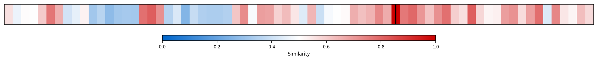
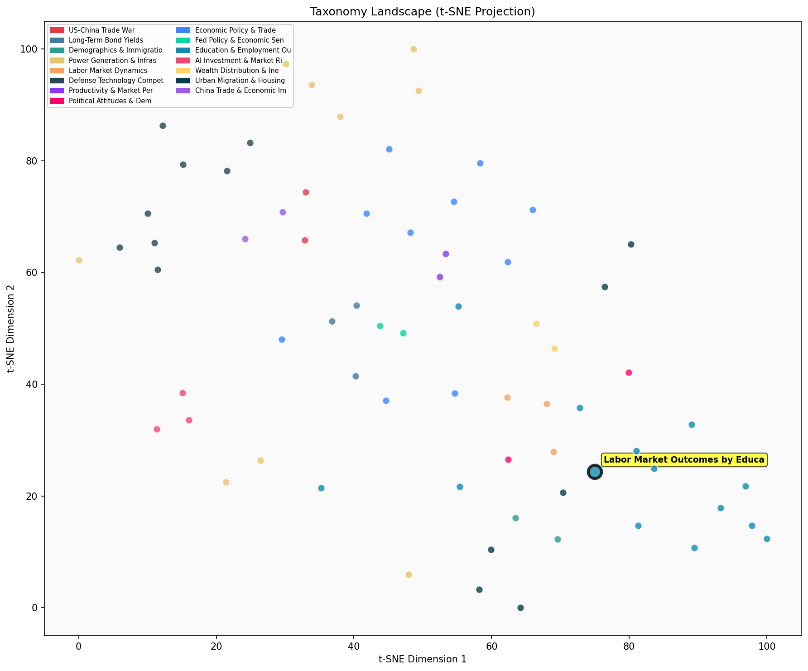

Description
This subcluster examines how educational attainment shapes employment outcomes, earnings trajectories, and broader socioeconomic well-being. Articles analyze labor force participation rates, wage gaps, and career prospects across education levels, particularly focusing on non-college workers' declining opportunities and social status. Research draws from longitudinal employment data, international comparative studies, and demographic surveys spanning 1980-2024. Unlike sibling clusters examining academic performance metrics or generational wealth patterns, this subcluster specifically connects educational credentials to labor market realities, exploring how technological change, geographic factors, and economic restructuring create divergent outcomes for college versus non-college populations in employment rates, job quality, and social mobility.
Similarity to All 70 Subclusters
Each cell represents a subcluster. Color intensity shows similarity (blue=low, red=high). Black line marks current subcluster position.
Relationship to Primary Clusters
Average similarity to each of the 15 primary clusters. Larger area = stronger relationship to that cluster.
Taxonomy Landscape
All 70 subclusters positioned by similarity (t-SNE). Current subcluster highlighted with label. Click to enlarge.
Network Connections
Current subcluster at center, connected to related subclusters. Line thickness = similarity strength.
Most Representative Articles
-
1. Change in their relative earnings accounted for 44% of the growth in labor force exits among non-col
-
2. The density of four-year colleges in 1980 is the most important single predictor of a region’s emplo
-
3. The gap in employment rates between workers 25–54 who have completed college and workers who have no
-
4. A new @NBERpubs paper shows that newer firms have more earnings dispersion than older firms, and tha
-
5. Using 2022–2024 data from 22 countries in the Global Flourishing Study, the authors construct a “non
Edge Cases (Boundary Articles)
-
1. .@swinshi Thomas O’Rourke @AEIecon find that the Southeastern/Southwestern US have the lowest levelsThis article is borderline because it focuses on regional variations in social capital rather than directly examining how educational attainment affects employment outcomes or earnings, which is the core theme of the assigned cluster. While social capital can influence labor market outcomes, the article's emphasis on geographic patterns of social trust and civic engagement aligns more closely with regional economic dynamics than with education-based employment analysis.
-
2. .@kevinrinz documents a 25% increase since February 2020 in the share of the prime-age US populationThis article is borderline because while cognitive difficulties can impact labor market performance and may correlate with education levels, the article specifically focuses on a health/cognitive decline phenomenon affecting the general prime-age population rather than examining how educational attainment directly shapes employment outcomes or earnings. The content aligns more naturally with youth/population health trends than with education-based labor market analysis.
-
3. Large cities in France btw 1994-2015 lost middle wage jobs, but they were replaced two-to-one with hThis article is borderline because while it discusses wage/job changes that likely correlate with education levels (middle vs. high-paid jobs), it focuses primarily on geographic and urban economic dynamics rather than explicitly analyzing how educational attainment drives these employment outcomes. The content aligns more closely with metropolitan economic patterns and city-size effects than with educational determinants of labor market success.
Original Dendrogram